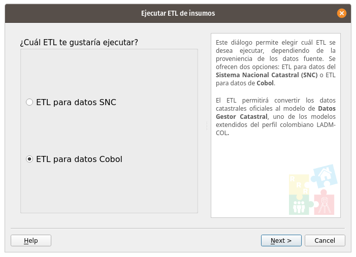

Procedimiento para ejecutar el ETL¶
Abrir QGIS.
Instalar el Asistente LADM-COL.
Seleccionar LADM-COL -> Administración de datos -> Crear estructura LADM-COL.
Realizamos clic en la opción, Configurar conexión.
Diligenciamos los datos de Host, Puerto, Usuario, Contraseña y realizamos clic en Refrescar bases de datos y esquemas.
Seleccionamos la base de datos y el esquema en donde queremos crear la estructura de LADM-COL, por último, clic en Aceptar.

En la interfaz que se despliega, seleccionamos el SRC de nuestros datos, el modelo Datos_Gestor_Catastral_V2_9_6 y clic en Crear estructura LADM-COL.

Una vez se ha creado la estructura de Datos_Gestor_Catastral, se da clic en Cerrar.
Seleccionar LADM-COL -> Gestión de insumos de datos -> Crear estructura LADM-COL.
Seleccionar ETL para datos Cobol -> Clic en Next

Seguido es necesario cargar cada uno de los archivos con extensión .lis y definir la base de datos destino a partir del botón configurar conexión -> seleccionamos el esquema en el que deseamos crear los datos.
Por último, clic en Ejecutar ETL.

Por último, se obtiene un resumen de los datos transferidos al modelo LADM-COL y clic en finalizar.